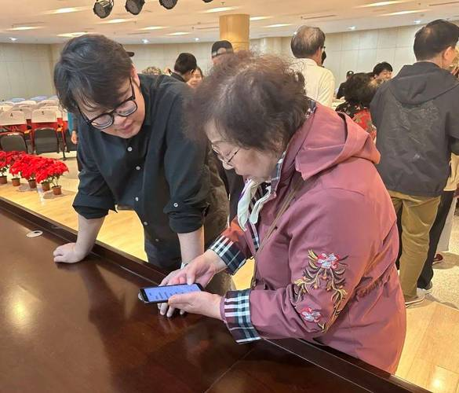

八大健康模块
档案 · 监测 · 评估 · 慢病 · 营养 · 运动 · 心理 · 救助
健康档案
建立个人专属电子健康档案，详细记录病史、过敏史、手术史、用药情况。历次体检报告云端存储，随时查阅。支持一键分享给就诊医生，提高诊疗效率。家属可通过小程序实时查看，掌握长者健康状况。
健康监测
智能穿戴设备24小时监测血压、血糖、心率、血氧、体温等关键指标。数据每5分钟自动上传，生成健康趋势图。异常指标立即预警，推送给本人和家属。连续监测睡眠质量，分析深睡浅睡比例，改善睡眠问题。
健康评估
每月由专业医生进行健康风险评估，生成个性化健康报告。评估内容包括心血管、糖尿病、骨质疏松等风险指数。根据评估结果制定健康改善计划，包括饮食调整、运动建议、用药指导。定期跟踪评估效果，动态优化方案。
慢病管理
针对高血压、糖尿病、冠心病等慢性病，提供个性化管理方案。每日用药提醒，避免漏服错服。饮食禁忌自动提示，营养搭配建议。定期复诊提醒，预约挂号一键完成。慢病数据长期追踪，为医生诊疗提供依据。
营养指导
营养师根据体检结果和健康状况，定制科学营养食谱。三餐搭配营养均衡，食材选择因人而异。提供每周菜谱参考，详细烹饪步骤。针对糖尿病、高血压等慢性病，制定专门饮食方案。配送服务送餐上门，解决买菜做饭难题。
运动康复
康复师根据身体状况，定制适合长者的运动方案。包括太极、八段锦、慢走、游泳等有氧运动。关节炎、腰腿痛等康复训练专业指导。提供运动视频教程，在家也能锻炼。运动数据自动记录，监测运动强度，避免运动过量。
心理关怀
心理咨询师一对一服务，疏导孤独、焦虑、抑郁等情绪问题。认知功能训练延缓大脑衰老，包括记忆力、注意力、计算力训练。定期上门陪伴聊天，倾听老人心声。组织心理健康讲座，传授情绪管理技巧。已帮助8500+位老人走出心理困境。
紧急救助
一键紧急呼叫按钮，按下立即接通救援中心。跌倒检测自动报警，5分钟内响应。GPS定位精准到楼栋单元，救援人员快速到达。同时通知家属和120急救中心。历史急救记录保存，方便医生了解病情。24小时值守，全年无休，让老人和家属更安心。
"我有高血压和糖尿病，以前经常忘记吃药，血压血糖控制得不好。用了银龄智行记的健康管理服务后，每天按时提醒吃药，还有营养师指导饮食。血压从原来的160降到现在的135，血糖也稳定多了。有一次半夜血压突然升高，设备马上报警，儿子接到通知立刻赶回来送我去医院。健康监测很及时，子女在手机就能看到我的健康数据，他们在外工作也放心，我自己也安心。"
